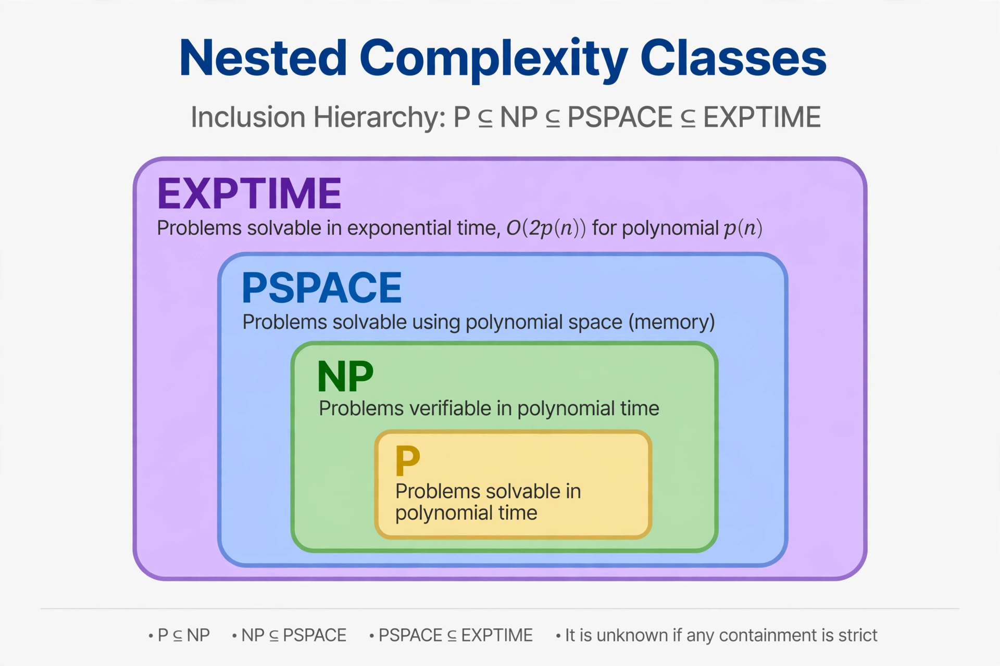

From Wikipedia, the free encyclopedia
| PSPACE | |
| Field | Computational complexity theory |
|---|---|
| Definition | Decision problems solvable by a Turing machine using polynomial space |
| Key facts | P ⊆ NP ⊆ PSPACE ⊆ EXPTIME; NPSPACE = PSPACE (Savitch's theorem) |
| Canonical complete problem | Quantified Boolean formula problem (TQBF/QBF) |
| Named by / early results | Savitch (1970); Shamir — IP = PSPACE (1990) |

In computational complexity theory, PSPACE is the set of all decision problems that can be solved by a Turing machine using a polynomial amount of space. Formally, PSPACE is the union over all k of DSPACE(nk), the problems solvable with O(nk) tape cells on inputs of length n. Because space can be reused, PSPACE is vastly larger than the class of problems solvable with polynomial time alone might suggest: a machine using polynomial space may run for exponentially many steps before repeating a configuration. PSPACE occupies a central place in complexity theory, containing P and NP and contained in EXPTIME.
The standard chain of inclusions is P ⊆ NP ⊆ PSPACE ⊆ EXPTIME. The first inclusion is the famous open P versus NP problem; whether NP equals PSPACE is also open, though most researchers expect them to differ. Savitch's theorem (1970) shows that nondeterminism adds no power for space classes above logarithmic: NPSPACE = PSPACE, because a nondeterministic computation using space s can be simulated deterministically in space O(s²). The same reachability technique implies NL ⊆ PSPACE. By the space hierarchy theorem, PSPACE is strictly contained in EXPSPACE, and at least one of the inclusions in the chain must be strict, though which one is unknown.
The canonical PSPACE-complete problem is the quantified Boolean formula problem (TQBF or QBF): deciding the truth of a fully quantified Boolean formula such as ∀x ∃y ((x ∨ y) ∧ (¬x ∨ ¬y)). Natural complete problems abound in games and planning: determining the winner from a given position in generalised (n×n) versions of games such as geography, checkers (draughts), Go (with certain rules), and many puzzle and reconfiguration problems are PSPACE-complete or harder — generalised chess and checkers in fact reach EXPTIME-completeness. The equivalence IP = PSPACE, proved by Adi Shamir (1990, building on Lund, Fortnow, Karloff, and Nisan), shows that every PSPACE problem has an interactive proof system — one of the most celebrated results in the field, and a route by which the complexity of games against a prover can be characterised.
PSPACE has clean logical and game-theoretic characterisations: it equals the complexity of evaluating formulas of first-order logic with a transitive closure operator over finite structures, and it captures the power of alternating polynomial time (AP = PSPACE, Chandra–Kozen–Stockmeyer). Problems in PSPACE also characterise the outcomes of two-player games of perfect information played for polynomially many moves, which is why the class is so prominent in game theory and automated planning research.